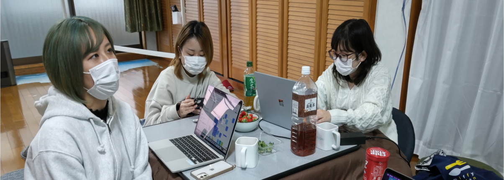

シビックテック・ラボで、チャレンジしませんか？

課題を構造から変えよう。
デザインの力を使い、
地域プロジェクトのプロとなる！
地域の過疎化・高齢化が進むこの時代、テクノロジーだけではなく、
価値の再構成をするデザインの力も求められています。
ただ課題を解決するだけでは、マイナスを０に戻しただけ。
現状からさらによくするにはどうしたらいいのか。
マイナスをプラスにまで持っていくにはどうしたらいいのか。
常に考え続ける必要があります。
時には課題の構造から考え直していくこともある。
そんなシビックテック・ラボで、
あなたも地域プロジェクトのプロになりませんか？
代表からのメッセージ


一般社団法人シビックテック・ラボ 代表理事 市川博之
常に考え、
課題解決と価値創出を。
学生時代、ボランティアや地域創生プロジェクトなどに参加したことはないだろうか？
いわばアマチュアだった学生時代。そこから”プロ”になるには、より規模の大きい、より複雑な課題にも取り組むことになる。
例えばシビックテックラボでは、自治体相手にプロジェクトを行うことが多くある。自治体は自分たちだけが良くなればいいわけではなく、市民を第一に考えながら多くの制約の中で課題解決をしなければならないのだ。
少しでも状況が違えば、答えは変わってくるはず。お客様とパートナーとして一緒に考え、ベストな解決策を見出していく必要がある。
さぁ私たちと一緒に、より良い価値を創造していかないか？
事業内容
UX/サービスデザイン
自治体職員自らがDXプロジェクトリーダーとなるためのマインドチェンジを促すため、実際の課題を題材に、伴走型・実践型のDX研修を行っています。また、自治体やNPO向けの各種計画の支援や、ビジョン策定からの施策の立案、サービスの立案といった上流工程から、開発・テスト・定着までのプロジェクトマネジメントまで、一気通貫で支援します。
ただのワークショップで終わらせず、本当に解決しなければならないものをクライアントと一緒に考え、突き詰めていきます。
UX/サービスデザイン
自治体職員自らがDXプロジェクトリーダーとなるためのマインドチェンジを促すため、実際の課題を題材に、伴走型・実践型のDX研修を行っています。また、自治体やNPO向けの各種計画の支援や、ビジョン策定からの施策の立案、サービスの立案といった上流工程から、開発・テスト・定着までのプロジェクトマネジメントまで、一気通貫で支援します。
ただのワークショップで終わらせず、本当に解決しなければならないものをクライアントと一緒に考え、突き詰めていきます。
UX/サービスデザイン
自治体職員自らがDXプロジェクトリーダーとなるためのマインドチェンジを促すため、実際の課題を題材に、伴走型・実践型のDX研修を行っています。また、自治体やNPO向けの各種計画の支援や、ビジョン策定からの施策の立案、サービスの立案といった上流工程から、開発・テスト・定着までのプロジェクトマネジメントまで、一気通貫で支援します。
ただのワークショップで終わらせず、本当に解決しなければならないものをクライアントと一緒に考え、突き詰めていきます。
UX/サービスデザイン
自治体職員自らがDXプロジェクトリーダーとなるためのマインドチェンジを促すため、実際の課題を題材に、伴走型・実践型のDX研修を行っています。また、自治体やNPO向けの各種計画の支援や、ビジョン策定からの施策の立案、サービスの立案といった上流工程から、開発・テスト・定着までのプロジェクトマネジメントまで、一気通貫で支援します。
ただのワークショップで終わらせず、本当に解決しなければならないものをクライアントと一緒に考え、突き詰めていきます。
デザインの種類
シビックテック・ラボでは、デザインを用いて課題解決と価値創出ができる人材を募集しています。 特定の業務のみ行うのではなく、
それぞれの得意分野・領域に応じた業務をしながら、新たな分野にもチャレンジする必要があります。
また、代表やプロジェクトのサポート業務を行うこともあります。
サービスデザイナー
シビックテック・ラボでは、デザインを用いて課題解決と価値創出ができる人材を募集しています。 特定の業務のみ行うのではなく、それぞれの得意分野・領域に応じた業務をしながら、新たな分野にもチャレンジする必要があります。また、代表やプロジェクトのサポート業務を行うこともあります。
必要になるスキル
モノ、コトづくりが好きな人
UXデザイナー
シビックテック・ラボでは、デザインを用いて課題解決と価値創出ができる人材を募集しています。 特定の業務のみ行うのではなく、それぞれの得意分野・領域に応じた業務をしながら、新たな分野にもチャレンジする必要があります。また、代表やプロジェクトのサポート業務を行うこともあります。
必要になるスキル
モノ、コトづくりが好きな人
ワークショップデザイナー
シビックテック・ラボでは、デザインを用いて課題解決と価値創出ができる人材を募集しています。 特定の業務のみ行うのではなく、それぞれの得意分野・領域に応じた業務をしながら、新たな分野にもチャレンジする必要があります。また、代表やプロジェクトのサポート業務を行うこともあります。
必要になるスキル
モノ、コトづくりが好きな人
ビジュアルデザイナー
シビックテック・ラボでは、デザインを用いて課題解決と価値創出ができる人材を募集しています。 特定の業務のみ行うのではなく、それぞれの得意分野・領域に応じた業務をしながら、新たな分野にもチャレンジする必要があります。また、代表やプロジェクトのサポート業務を行うこともあります。
必要になるスキル
モノ、コトづくりが好きな人
募集要項
| 雇用形態 | 正社員（試用期間3ヶ月） |
|---|---|
| 勤務時間 | 9:00-18:00（休憩時間 12:00-13:00）※状況に応じて変則的に対応することがあります。 |
| 休暇・休日 | 土日祝日、有給休暇（勤務半年後より）、産休・育休・病休・生理休暇など本人との面談によって取得可能。 |
| 勤務地 | 静岡県静岡市葵区新通り1丁目 最寄りバス停「本通り8丁目」 |
| 給与 | 月給 250,000〜（能力に応じて変動します） |
| 待遇・福利厚生 |
保険制度（雇用保険、労災保険、厚生年金、健康保険）
交通費または家賃補助 資格取得支援制度あり 服装自由 |
| 選考プロセス |
1.書類審査
2.適正検査
3.オンライン面接
|
インターンシップ

シビックテック・ラボでは、インターンシップも行っています。過去には、実際にシビックテックラボが行なっていた事業の課題に対して解決案を提案書を作成するというグループワークを行いました。 インターンシップの応募は、お問い合わせからご連絡ください。